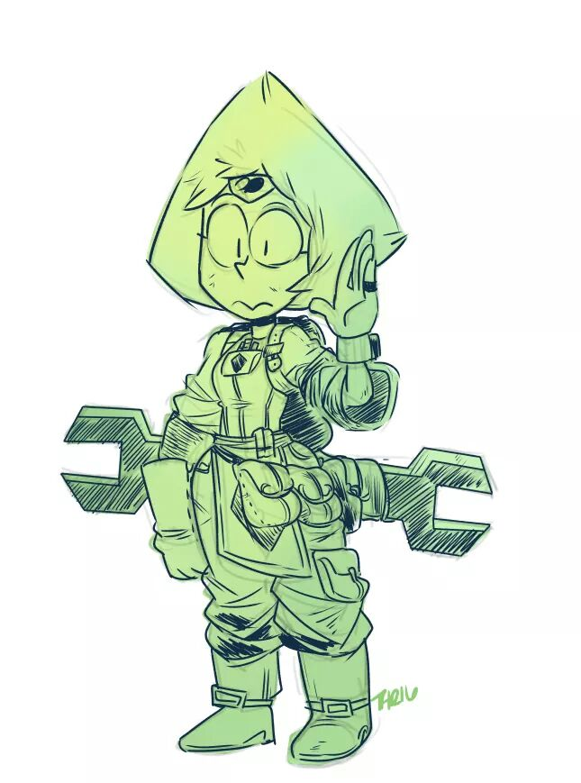

Computacion:
Mi motivacion:
Como dije anteriormente mi tio Roberto siempre ha sido mi inspiracion y ejemplo a seguir ya que el me introdujo al mundo de la informatica,
el me ha enseñado practicamente todo lo que se de tecnologia por eso sin duda alguna opte por esta carrera. Comforme he avanzado en mi
carrera he descubierto muchas cosas interesantes que refuerzan mi aprecio por esta area de estudio ya que no es
una carrera facil, es indispensable la dedicacion ahi es donde se demuestra si realmente que estas dispuesto a dar lo mejor de ti.

Experiencias:
Se podria decir que mis dos años de carrera han sido una muy buena experiencia, toda la gente nueva que conoci,
los conocimiento que adquiri y los profesores como Christian Garita, Olda Bustillos y Jose Romero me han enseñado y motivan a seguir adelante con lo que me gusta
y a dar lo mejor de mi. Sin duda los cursos de programacion y diseño digital han sido un verdadero reto para mi pero sin no fuera asi
quisas no me sentiria identificado con mi carrera. De igual manera los verdaderos compañeros y amigos que han sido
un gran apollo para mi son personas en las que puedo confiar y que luchan por superarse sin importar la cituacion.